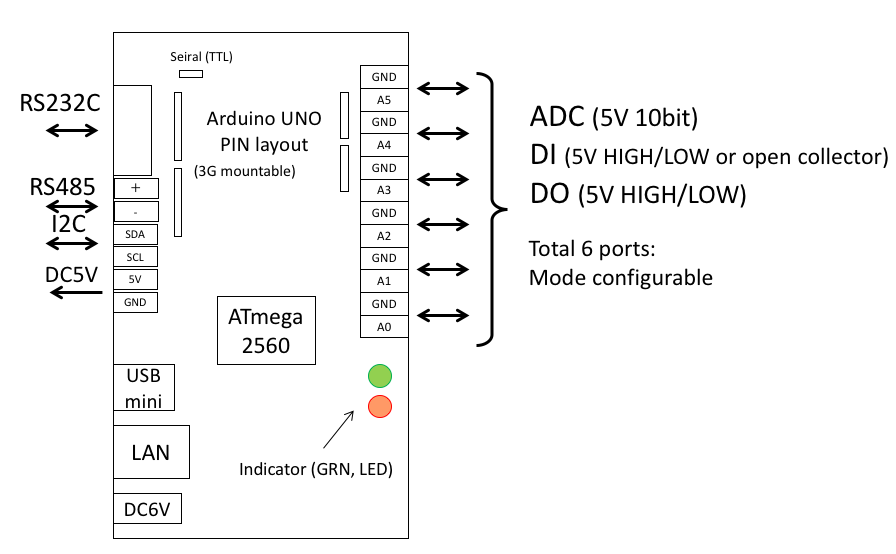
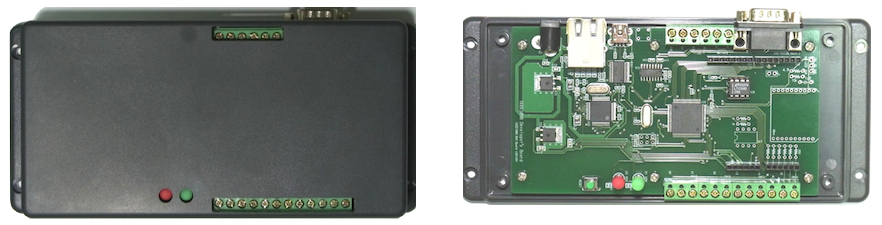
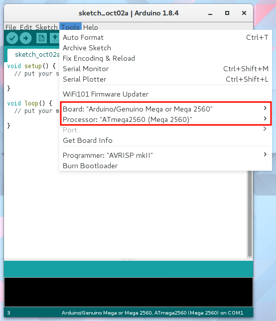
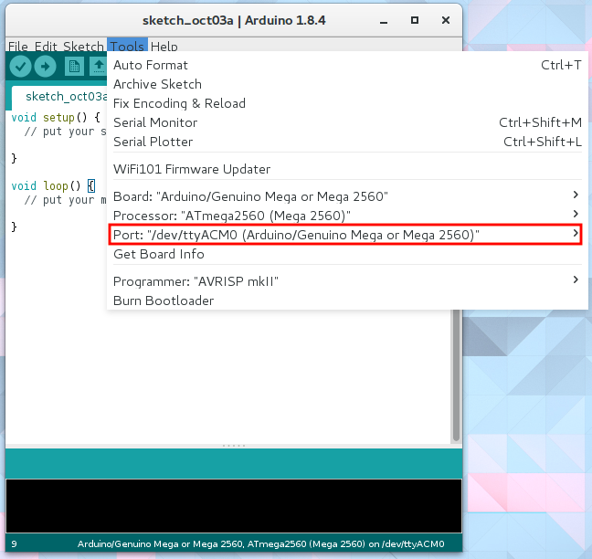
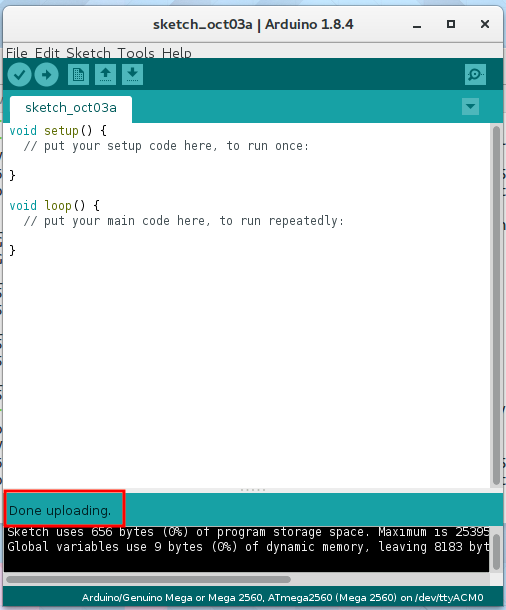

M2Mゲートウェイの準備
電源
電源は6Vから12V，センタープラスのACアダプタが使用できます．  
Arduinoから書き込み
書き込みボード設定
まず，M2MゲートウェイをUSBケーブルでパソコンに接続します．次に，Arduinoを正しく書き込めるように設定します．Arduinoのツール→ボード→"Arduino/Genuino Mega or Mega 2560"を選択します．必ずプロセッサーが"ATmega 2560 (Mega 2560)"が選択されていることを確認してください． 
M2Mゲートウェイをパソコンに接続すると自動的にドライバーがインストールされ，ツール→ポートに表示されます．パソコンに複数のArduinoやシリアル通信機器が接続されている場合，複数表示されます．当該Arduinoの接続ポートを選択しましょう． 
書き込み
いよいよM2Mゲートウェイにプログラムを転送します．
Arduinoウィンドウ左上の書き込みボタンをクリックします．

正常に転送できた場合，このような表示になります． 
失敗している場合，設定や接続をよく確認して再度書き込んでみましょう．